BIMP: az első szimulációd
Állítsd be a kávézómodell terhelését és erőforrásait, majd vizsgáld meg, hol alakul ki szűk keresztmetszet a reggeli csúcsban.
- feltöltötted a kávézó-modelledet a BIMP szimulátorba, és lefuttattad az első szimulációdat;
- minden beállítási mezőről tudod, mit jelent, és miért azt az értéket írtuk bele;
- le tudod olvasni az eredményeket: átfutási idő, várakozás, kihasználtság, költség;
- láttad, mi történik a folyamattal csúcsidőben, és hogy nem mindegy, hova teszel plusz embert.
A folyamatmodell csak a sorrendet, míg a szimuláció a terhelést is megmutatja
Eddig azt rögzítettük, mi történik. A szimuláció a megadott feltételek mellett becsli az átfutási időt, a várakozást és az erőforrások terhelését. A BIMP böngészőben használható; a szimulációs paraméterek a modell részei, ezért a szimuláció eredménye ezek helyességétől is függ.
Mit fogunk beállítani? A BIMP négy kérdése
| Szakasz a BIMP-ben | Erre a kérdésre válaszol |
|---|---|
| Scenario Specification | Milyen sűrűn és hányan érkeznek? Mikor indul a nap? |
| Resources | Kik dolgoznak a folyamatban, hányan, mennyiért? |
| Tasks | Az egyes lépések meddig tartanak, és ki végzi őket? |
| Gateways | A döntési pontokon az esetek hány százaléka megy az egyes ágakra? |
A kitöltés sorrendje is ez: fentről lefelé. Így egyik szakasznál sem hiányzik majd az, amire a következő hivatkozik.
1. lépés: a modell feltöltése
- Nyisd meg ezt az oldalt: https://bimp.cs.ut.ee/simulator/ (regisztráció nem kell, az Academic változat az alapértelmezés).
- Kattints a Choose a file... gombra, és válaszd ki az 1. blokkban mentett kave_xor.bpmn fájlodat. (Ha korábban már töltöttél fel modellt, a feltöltő mező helyett az Upload a new model gombot látod majd. Ha az órán nem készült el a saját fájlod, keresd meg a kave_rendeles_xor.bpmn állományt a docs mappában és használd azt.
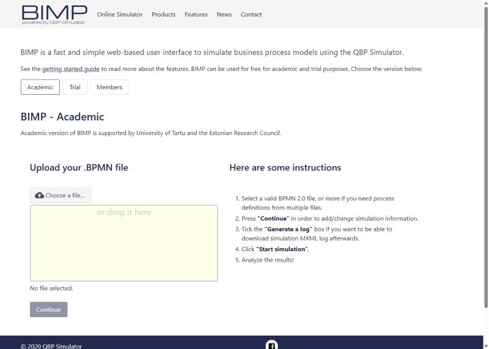
A nyitóoldal. A Choose a file gombbal tallózol, a fájlt a sárga mezőbe húzni is lehet. - A fájl neve megjelenik a Loaded files listában. Kattints a Continue gombra.
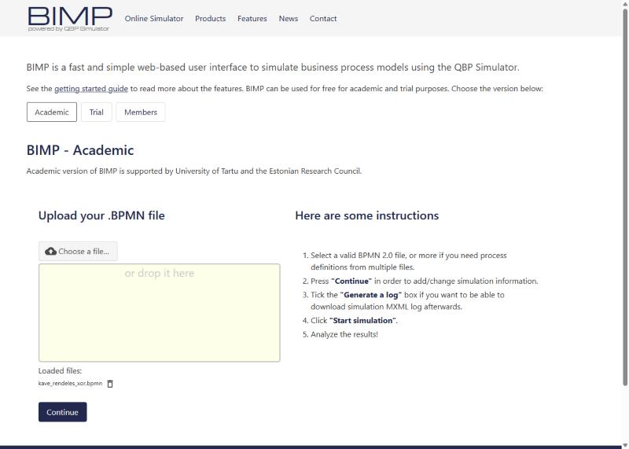
A kave_rendeles_xor.bpmn a Loaded files listában, aktív Continue gombbal
A Continue után megjelenik a Scenario Specification űrlap, felül a betöltött BPMN-fájl nevével. Ha a feltöltés hibát jelez, ellenőrizd, hogy valóban BPMN-modellt választottál. Az SVG csak ábra (kép) nem .bpmn kiterjesztésű állomány.
Ha a feltöltés nem sikerül: ellenőrizd a fájl kiterjesztését és/vagy tartalmát. A bpmn.io lefelé mutató nyila .bpmn modellt exportál; a képikon .svg ábrát.
2. lépés: Scenario Specification
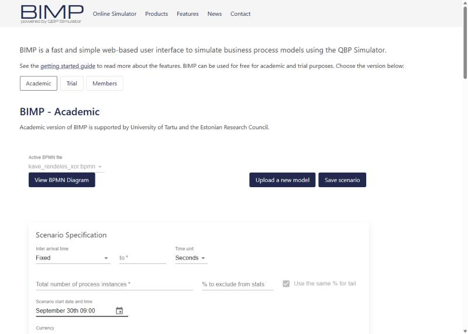
| Mező | Mit jelent? | Ide ezt írd |
|---|---|---|
| Inter arrival time | Két érkező vendég közt eltelő idő és annak eloszlása | Exponential, Mean: 6 |
| Time unit | Az előbbi érték mértékegysége | Minutes |
| Total number of process instances | Hány esetet (vendéget) szimulálunk összesen | 100 |
| % to exclude from stats | A statisztikából kizárt kezdő esetek aránya | hagyd üresen |
| Scenario start date and time | A szimulált nap kezdete | maradhat az alapérték (09:00) |
| Currency | A költség-kimutatás pénzneme (csak megjelenítés) | EUR |
A vendégek nem menetrend szerint jönnek: hol ketten egyszerre, hol percekig senki. Ezt a véletlenszerűséget írja le az exponenciális eloszlás; sorbanállási modellekben ez az érkezések szokásos alakja. A 6 perces átlag nyugodt délelőttöt jelent: kb. 10 vendég óránként. A blokk végén ezt állítjuk majd 3 percre: az a reggeli csúcs, dupla forgalommal.
- Állítsd be: Inter arrival time: Fixed helyett Exponential, a Mean mezőbe 6, a Time unit: Minutes.
- A Total number of process instances mezőbe írj 100-at. A többi mező maradhat.
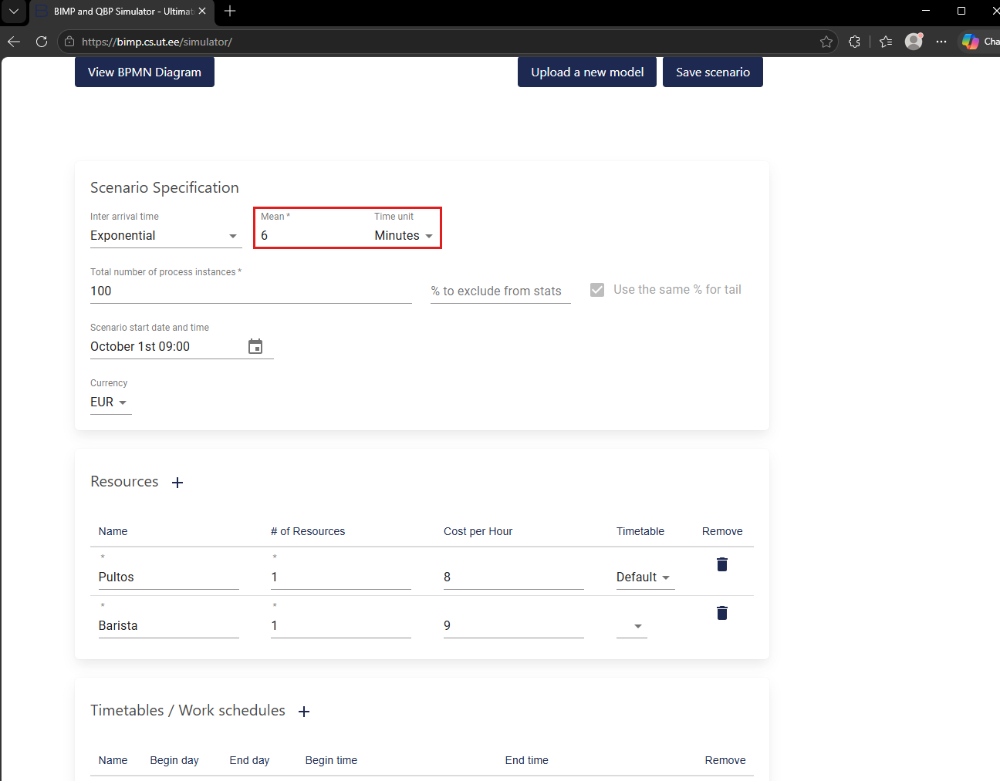
A kitöltött állapot. Ellenőrizd külön a Time unit mezőt: a leggyakoribb hiba a Seconds-on felejtett mértékegység.
3. lépés: Resources
- A Resources táblában nevezd át a meglévő sort: Name: Pultos, # of Resources: 1, Cost per Hour: 8, Timetable: Default.
- A + (Add a new resource) gombbal vegyél fel egy második sort: Barista, 1 fő, 9 EUR/óra, Timetable: Default.
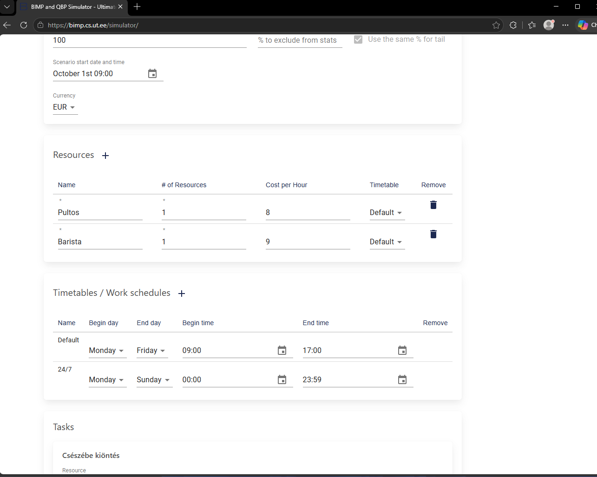
A kész erőforrás-tábla. A Timetable mindkét sorban Default (hétköznap 9-17); e nélkül a szimulátor nem tudja, mikor dolgoznak. - A Timetables / Work schedules táblában ellenőrizd a Default munkarendet: Begin day: Monday, End day: Friday, Begin time: 09:00, End time: 17:00.
A Cost per Hour nem kötelező a futáshoz, de ezzel kapod meg az eredményoldalon a folyamat költségét is: egy vezetőnek ez a szám legalább olyan fontos, mint a percek.
4. lépés: Tasks
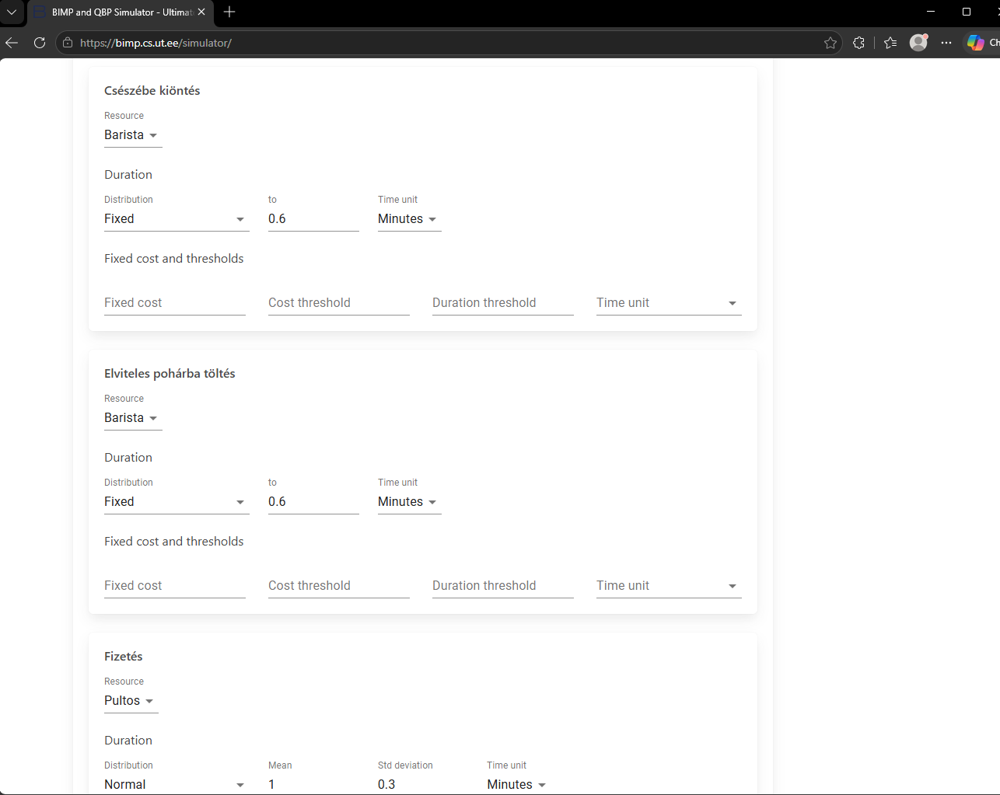
Töltsd ki az öt feladatot az alábbi táblázat szerint. Mindenhol állítsd a Time unit-ot Minutes-ra!
| Feladat | Resource | Distribution | Értékek (perc) | Miért ez? |
|---|---|---|---|---|
| Rendelés felvétele | Pultos | Normal | Mean 1.5, Std 0.4 | rutinlépés, kis ingadozással |
| Kávé elkészítése | Barista | Normal | Mean 3.2, Std 0.8 | a leghosszabb, legváltozékonyabb lépés |
| Csészébe kiöntés | Barista | Fixed | 0.6 | gépies mozdulat, gyakorlatilag mindig ugyanannyi |
| Elviteles pohárba töltés | Barista | Fixed | 0.6 | ugyanaz elvitelre |
| Fizetés | Pultos | Normal | Mean 1, Std 0.3 | kártyás fizetés, kis szórással |
- Fixed: a lépés mindig pontosan ennyi ideig tart. Gépies, szabványos mozdulatokra jó közelítés.
- Normal (normális eloszlás): a lépés időtartama az átlag (Mean) körül ingadozik; a Std a szórás. A 3.2 perces átlag és 0.8 perces szórás mellett az értékek nagyjából 68%-a 2.4 és 4.0 perc közé esik. A negatív időtartamra jelentős esélyt adó paraméterezést kerüld; a példában ennek esélye nagyon kicsi.
- Az eloszlást az adatok és a modellezési feltevések alapján válaszd. A mai egyszerű példában a változó feladatidőkre Normal, az állandó időkre Fixed, a véletlenszerű érkezésekre Exponential eloszlást használunk; ez nem minden üzleti folyamatra érvényes szabály.
- Menj végig a Tasks szakasz kártyáin fentről lefelé a fenti táblázat szerint: minden kártyán előbb a Resource-t válaszd ki, aztán a Distribution-t, írd be az értékeket, végül a Time unit-ot állítsd Minutes-ra.
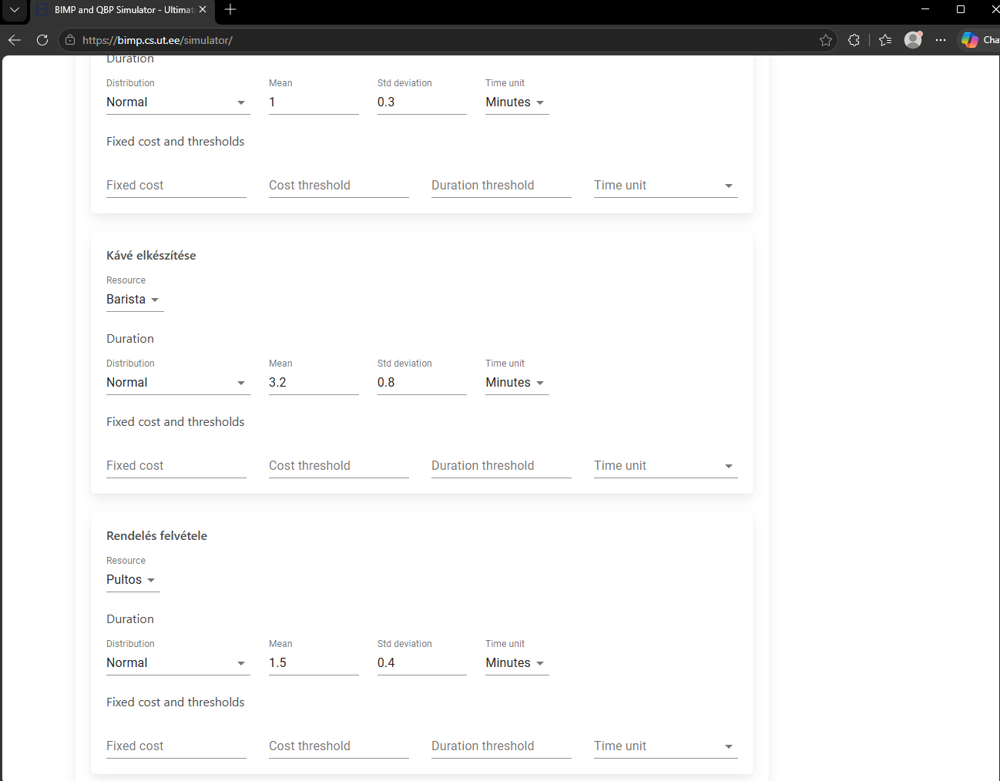
Egy kész kártya, alatta már a Gateways szakasz látszik. A kártyák sorrendje a BIMP-ben nem egyezik a folyamat sorrendjével: a nevek alapján dolgozz.
5. lépés: Gateways
- A Gateways szakaszban a Helyben fogyasztja? kapunál írd be: Csészébe kiöntés ág: 60, Elviteles pohárba töltés ág: 40. Ez azt mondja: a vendégek 60%-a helyben fogyasztja a kávét, 40%-a elviszi.
A két ág összege pontosan 100 kell legyen. Amíg nem az, a BIMP piros hibaüzenetet mutat: Sum of exclusive gateway probabilities must be equal to 100%. Ez a leggyakoribb kitöltési hiba; így néz ki:
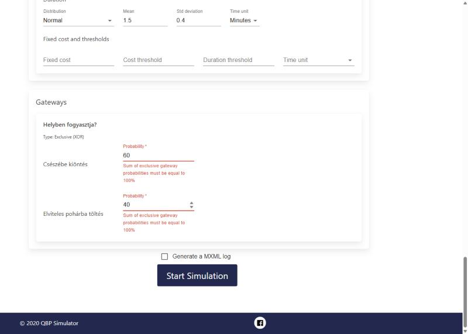
6. lépés: Simulation
- Görgess az oldal aljára, és kattints a Start Simulation gombra. (A Generate a MXML log pipára nincs szükségünk.) A futás pár másodperc, utána az oldal maga vált át az eredményekre.
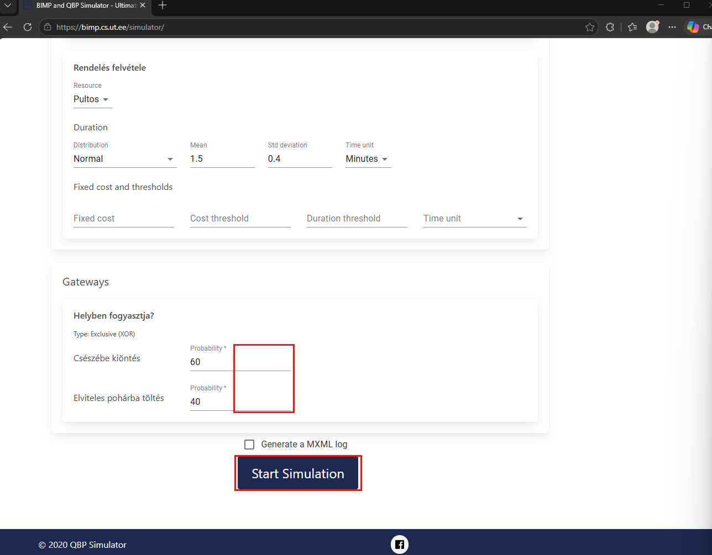
A Gateways szakasz a 60/40 aránnyal és alatta a Start Simulation gomb (keretben)
7. lépés: az eredmények elolvasása
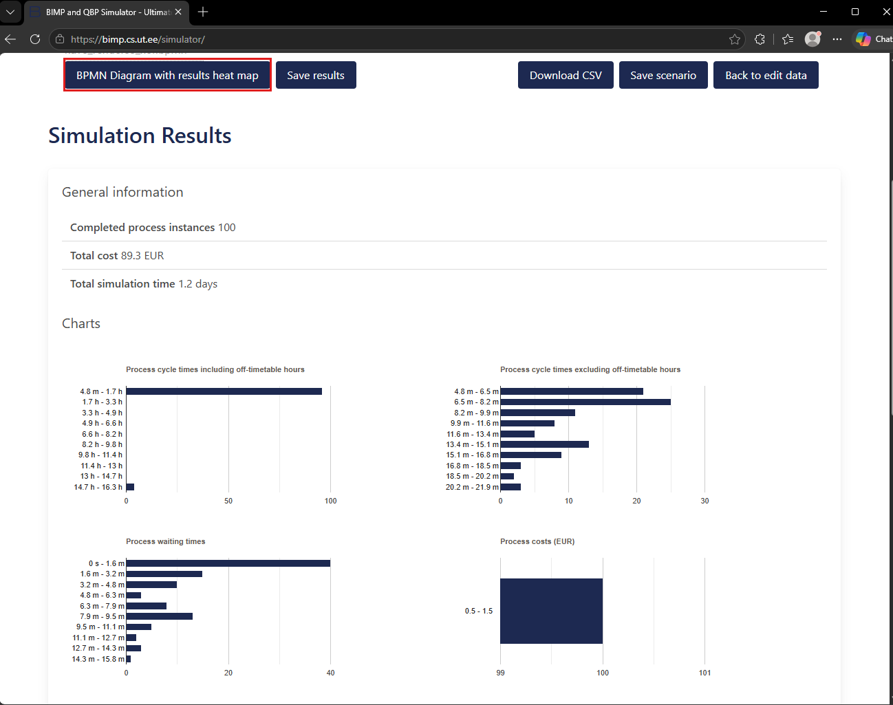
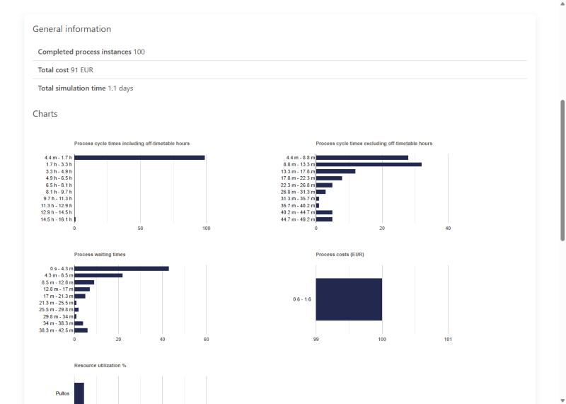
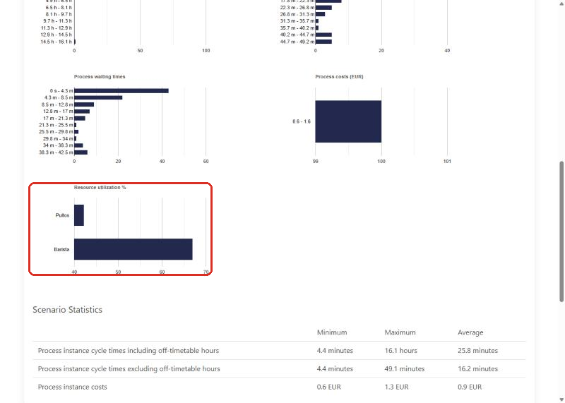
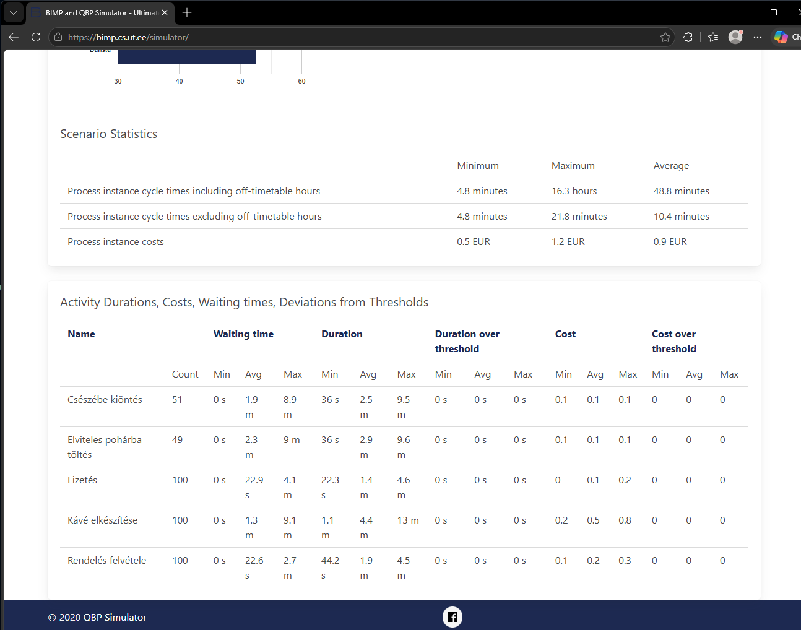
HAz eredményeket három fő mutató segítségével foglald össze: az átlagos átfutási idővel, a várakozási pontokkal és az erőforrások kihasználtságával. Például: „A szimulációban az átlagos átfutási idő … perc volt. A legnagyobb várakozás a … lépés előtt alakult ki. A barista kihasználtsága …%, a pultosé pedig …% volt. Ezek alapján érdemes megvizsgálni a … beavatkozást.”
A hőtérkép: ránézésre látszik a szűk keresztmetszet
Az eredményoldal tetején kattints a BPMN Diagram with results heat map gombra. A hőtérkép felugró ablakban nyílik: a böngésző először blokkolhatja, engedélyezd. A folyamatábra elemei zöldtől pirosig színeződnek.
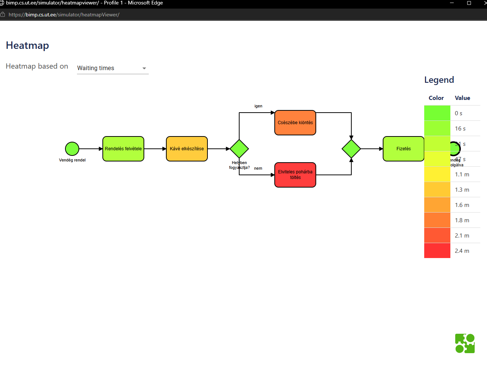
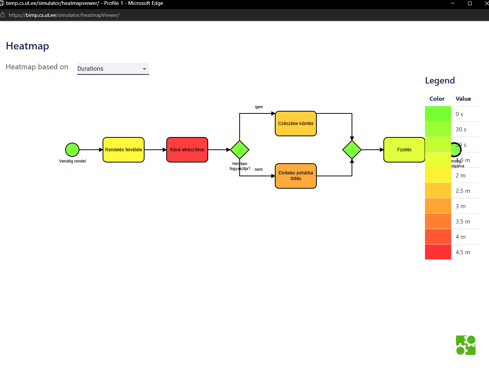
Először ellenőrizd, hogy az eredmények nagyságrendje megfelel-e a modell logikájának. Egy vendég kiszolgálása során a barista átlagosan 3,8 percet dolgozik (3,2 + 0,6 perc), a pultos pedig 2,5 percet (1,5 + 1 perc). Ha átlagosan 6 percenként érkezik egy új vendég, akkor a várható erőforrás-kihasználtság körülbelül 63% a baristánál és 42% a pultosnál. A szimulációban kapott értékek ettől valamelyest eltérhetnek az esetszám, a munkarend és a véletlenszerűség miatt. A feladatok együttes várható végrehajtási ideje 6,3 perc, ezért ha az átlagos átfutási idő például csak 1–2 perc, valószínűleg valamelyik időbeállítás hibás.
Ha az eredmény meglepő: először ellenőrizd minden tevékenységnél a Time unit mezőt; mindenhol Minutes legyen beállítva. A néhány másodperces feladatidők általában hibás mértékegységre utalnak.
Az alábbi, valódi futásból származó táblán a Kávé elkészítése átlaga 4.8 másodperc, az átfutás pedig 1.8 perc: itt a Tasks kártyákon a Time unit Seconds-on maradt, ezért a szimulátor a 3.2-t másodpercnek vette. Ha ilyet látsz, menj vissza a Back to edit data gombbal, és állítsd át az öt feladat mértékegységét Minutes-ra.
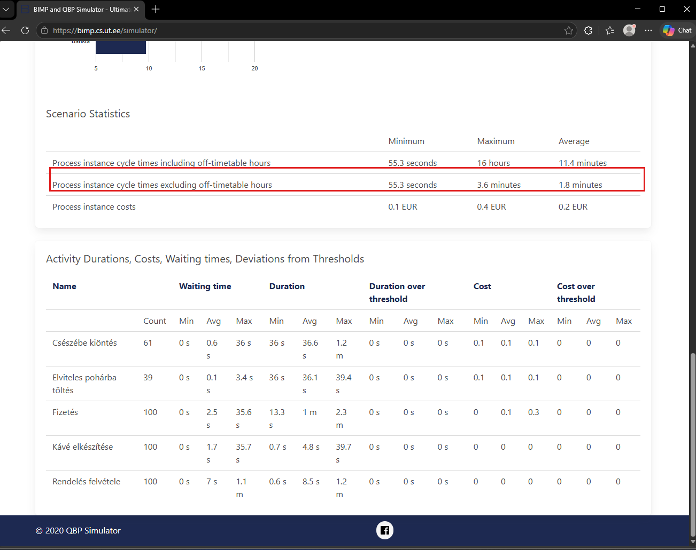
Most jön a reggeli csúcs
- A Back to edit data gombbal menj vissza, írd át az érkezésköz átlagát 3 percre, futtasd újra, és jegyezd fel: átlagos átfutás, barista-kihasználtság.
- Ezután dönts: hova tennél be egy plusz embert? Válassz: második barista vagy második pultos (a Resources táblában a # of Resources mezőt írd át 2-re). Állítsd be, futtasd, jegyezd fel.
- Végül próbáld ki a másik bővítést is: az előző változatban növelt létszámot állítsd vissza 1-re, és csak a másik erőforrást növeld 2-re. Az érkezésköz maradjon 3 perc. Így mindkét beavatkozást ugyanahhoz az alaphelyzethez hasonlítod.
| Forgatókönyv | Számított átlagos terhelés | Mit vizsgálj a futásban? |
|---|---|---|
| 6 perc; 1 pultos, 1 barista | Pultos ≈ 42%; barista ≈ 63% | Várakozás és átlagos átfutás az alaphelyzetben. |
| 3 perc; 1 pultos, 1 barista | Pultos ≈ 83%; barista ≈ 127% | A barista igénye meghaladja a kapacitását. |
| 3 perc; 1 pultos, 2 barista | Pultos ≈ 83%; barista ≈ 63% fejenként | Mennyivel csökken a várakozás? Hol marad még sor? |
| 3 perc; 2 pultos, 1 barista | Pultos ≈ 42% fejenként; barista ≈ 127% | A barista kapacitáshiánya megmarad. |
A megoldást nem egyszerűen egy plusz munkatárs jelenti, hanem az, ha a többletkapacitást éppen a szűk keresztmetszetnél biztosítjuk. A szimuláció abban segít, hogy ezt még a tényleges beavatkozás és annak költségei előtt felismerjük. Ugyanez a gondolat jelenik majd meg az 5. blokk raktári példájában is.
A beállításokat az eredményoldal Save scenario gombjával mentsd el. A bpmn.io-ban készített alapmodell és a BIMP-ből letöltött, paraméterezett modell külön fájl legyen, például kave_xor.bpmn és kave_xor_szimulacio.bpmn. Az eredmények CSV-jét is őrizd meg.
- M. Dumas és tsai: Fundamentals of Business Process Management, 2. kiadás: 7. fejezet (Quantitative Process Analysis): sorbanállás, átfutási idő és kihasználtság elmélete, pont ahogy ma használtuk.
- A BIMP rövid hivatalos útmutatója: bimp.cs.ut.ee/simulator/get-started.